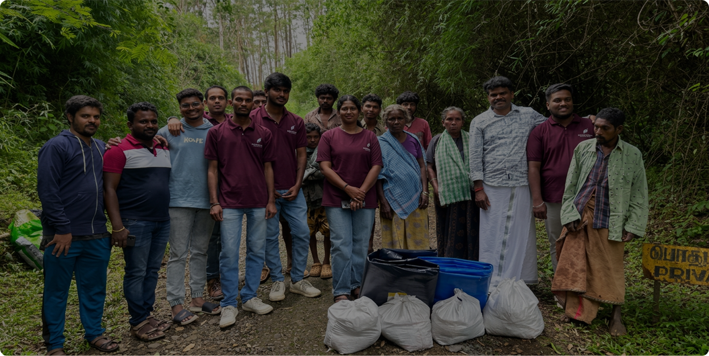

Swadharma Foundation supports differently abled individuals through sustainable community empowerment programs.
Swadharma Foundation promotes healthcare awareness and medical support in rural areas.
Supporting children and communities through education development initiatives.
Empowering communities with skills, opportunities, and resources to build a better future.